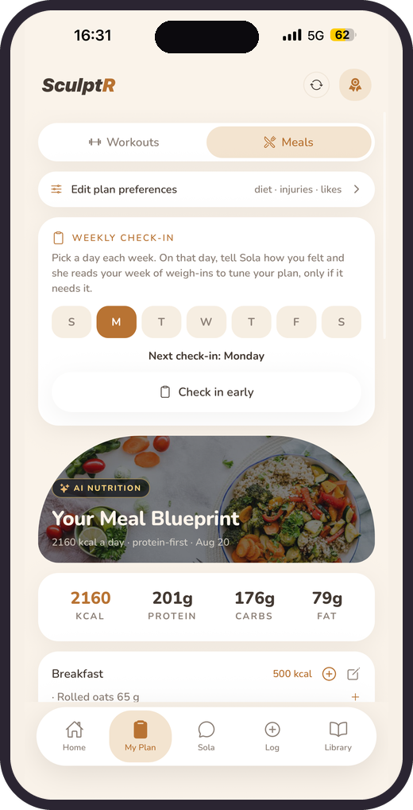
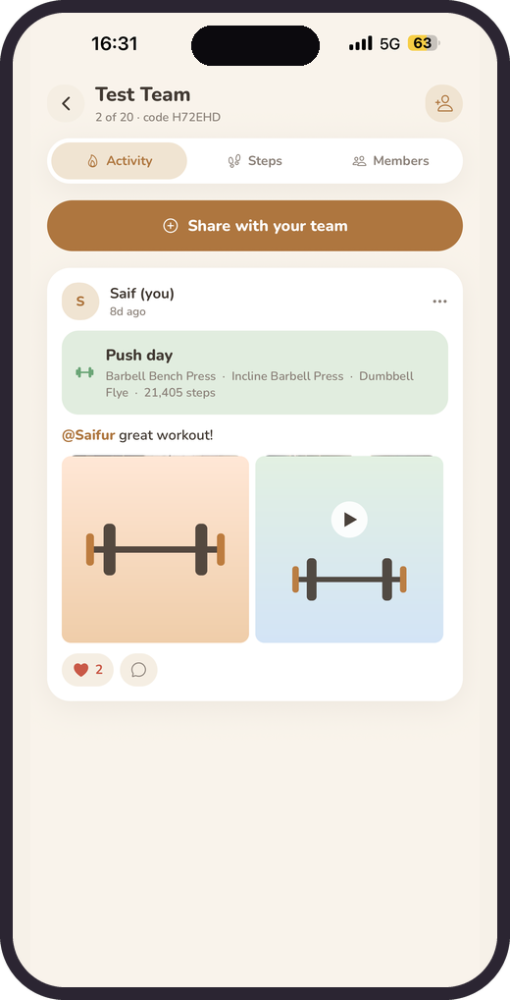
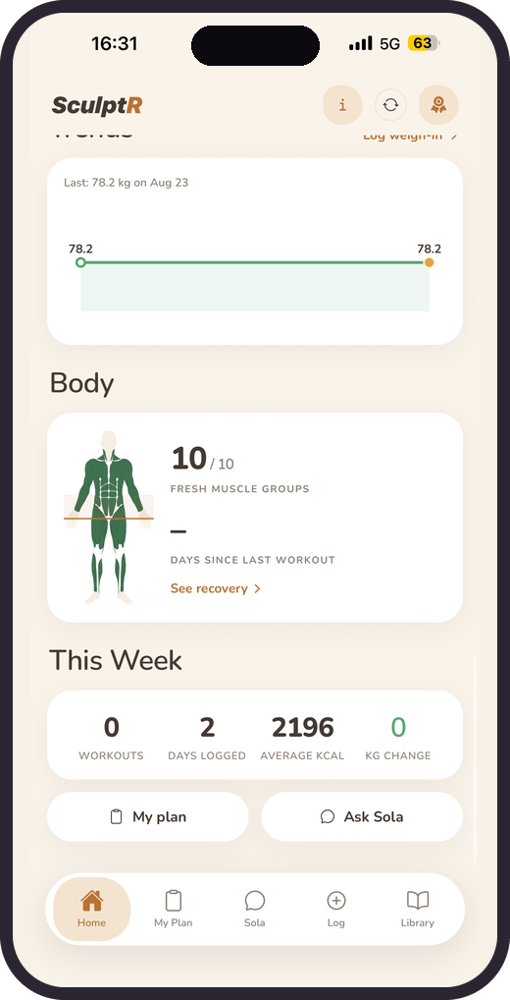
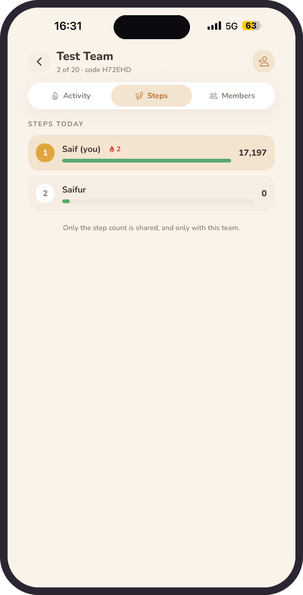
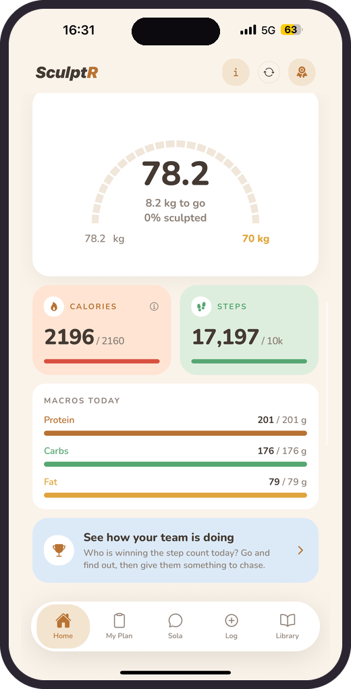

Answer a few questions. That is the whole setup.
Your goal, your gear, how you like to train and what you will not eat. Home opens with four rings waiting to be closed.
- Goal set
- Rings 0/4
- Streak starts today

SculptR builds your workouts and meals around your goal, then tunes them every week as your body changes. Track food, weight, steps and training in one place.
Scroll through the whole app, from the questions you answer first to the plan that keeps retuning itself.
Your goal, your gear, how you like to train and what you will not eat. Home opens with four rings waiting to be closed.
Sessions built around the equipment you actually have, the days you can train, and nothing that aggravates an old injury.

Calories and macros set for your goal, built from food you actually eat. Pick a day each week to tell Sola how it went, and she tunes the plan only if it needs it.

Scan a barcode, search millions of foods, or snap the plate and let Sola read the calories and macros off the photo.

Allergic to oats? Gym busy? Not sure the form is right? Sola swaps the food, rewrites the session and answers in seconds.

Share the session you just finished with photos or a video, tag whoever trained with you, and let the step race run all day.

Every session you log paints your muscle map, so you know which groups have recovered before you pick tomorrow’s training.

Your weight and your check in feed straight back into your calories and your cardio, so the plan never sits still while your body is changing.

Screens and figures are the app’s own example data.
Start a team with up to twenty people. Share the sessions you actually finished, and let the step count settle who wins the day.
Everyone on the team, ranked by today’s steps, updating as you walk. Enough to get you off the sofa at half nine.
Post the workout you just finished with photos or a video, and tag whoever was there lifting with you.
Likes and comments on every post, so a good week gets celebrated and a quiet one gets a nudge.
Only your step count is shared with the team. Your weight, your meals and your plan are never part of it.

No juggling a tracker, a plan and a coach. SculptR does all three.
Your plan rewrites itself. Sola reads your weekly weight and shifts calories and cardio to keep you moving.
Food, weight, steps and workouts all in the same app, with a food database covering millions of products.
Ask anything. Sola swaps foods, tweaks your plans and answers form questions in seconds.
Snap your meal and Sola estimates the calories and macros straight from the photo.
Calories, steps, weight and workout. Four simple rings to close every day, with streaks to keep you honest.
Workouts around your equipment, goal and injuries. Meals around your diet, allergies and the foods you love.
Up to twenty people, a step race that resets every night, and a feed for the sessions you actually finished.
Every session you log paints your muscle map, so you can see what is fresh and what wants another day.
Pick a day. Tell Sola how the week felt. She reads your weight and retunes the plan, only if it needs it.
Clean, warm and quick to use, on iPhone and Android. Drag to explore.


Answer a few questions and your first plan is ready.
Tell SculptR your goal, your gear and how you like to train.
Get an AI workout and meal plan built around your diet and any injuries.
Log as you go and check in weekly. Sola recalibrates so progress never stalls.
Free to download. Log your food, weight and workouts, and meet Sola.